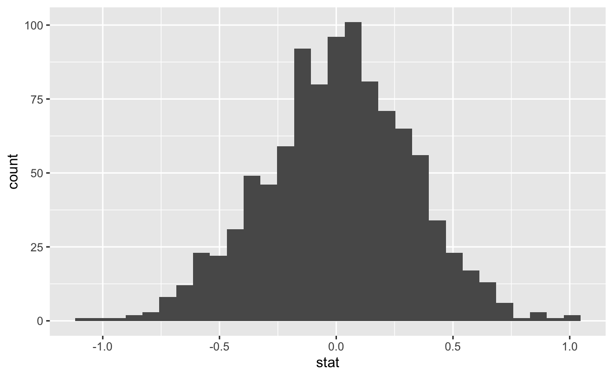

Every two years, the Centers for Disease Control and Prevention conduct the Youth Risk Behavior Surveillance System (YRBSS) survey, where it takes data from high schoolers (9th through 12th grade), to analyze health patterns. You will work with a selected group of variables from a random sample of observations during one of the years the YRBSS was conducted.
Load the yrbss data set into your workspace and take a look at what the data look like.
glimpse(yrbss)
skim(yrbss)Next, consider the possible relationship between a high schooler’s weight and their physical activity. Plotting the data is a useful first step because it helps us quickly visualize trends, identify strong associations, and develop research questions.
First, let’s create a new variable physical_3plus, which will be coded as either “yes” if the student is physically active for at least 3 days a week, and “no” if not.
yrbss <- yrbss %>%
mutate(physical_3plus = if_else(physically_active_7d > 2, "yes", "no"))Next, let’s modify the code below to make a side-by-side violin plots of physical_3plus and weight. Is there a relationship between these two variables? What did you expect and why?
yrbss <- yrbss %>%
mutate(physical_3plus = if_else(physically_active_7d > 2, "yes", "no"))yrbss %>%
ggplot(aes(x = physical_3plus, y = ___)) +
geom_violin()There is an observed difference, but is this difference large enough to be deemed “statistically significant”? In order to answer this question we will conduct a hypothesis test.
What would be the hypotheses for testing if the average weights are different for those who exercise at least times a week and those who don’t?
Alright, next we will work through creating a permutation distribution using the infer package.
First, we need to find the observed difference in means, which we will save as obs_diff.
yrbss <- yrbss %>%
mutate(physical_3plus = if_else(physically_active_7d > 2, "yes", "no"))obs_diff <- yrbss %>%
specify(weight ~ physical_3plus) %>%
calculate(stat = "diff in means", order = c("yes", "no"))Recall that the specify() function is used to specify the variables you are considering (notated y ~ x), and you can use the calculate() function to specify the statistic you want to calculate and the order of subtraction you want to use. For this hypothesis, the statistic you are searching for is the difference in means, with the order being yes - no.
After you have calculated your observed statistic, you need to create a permutation distribution. This is the distribution that is created by shuffling the observed weights into new physical_3plus groups, labeled “yes” and “no”.
Fill in the code below to create a permutation distribution, and save the distribution as null_dist. Then, use the head() function to view the first six permutation statistics.
yrbss <- yrbss %>%
mutate(physical_3plus = if_else(physically_active_7d > 2, "yes", "no"))null_dist <- yrbss %>%
specify(weight ~ physical_3plus) %>%
hypothesize(null = ____) %>%
generate(reps = 1000, type = ____) %>%
calculate(stat = "diff in means", order = c("yes", "no"))
## Use head() to preview the permutation statisticsThe hypothesize() function is used to declare what the null hypothesis is. Here, we are assuming that student’s weight is independent of whether they exercise at least 3 days or not.
We should also note that the type argument within generate() is set to "permute". This ensures that the statistics calculated by the calculate() function come from a reshuffling of the data (not a resampling of the data)! Finally, the specify() and calculate() steps should look familiar, since they are the same as what we used to find the observed difference in means!
For a hypothesis test we are interested in how many of these permutations were at least as large as our observed difference (obs_diff). First, let’s plot the distribution of the permuted statistics.
null_dist %>%
ggplot(aes(x = stat)) +
geom_histogram() 
Now, add a vertical red line to the plot above, demonstrating where the observed difference in means (obs_diff) falls on the distribution!
null_dist %>%
ggplot(aes(x = stat)) +
geom_histogram() +
geom_vline(xintercept = ____, color = ____)Now that you have calculated the observed statistic and generated a permutation distribution, you can calculate the p-value for your hypothesis test using the get_p_value() function from the infer package. In the get_p_value() function, we need to declare what the observed statistic (obs_diff) is, and what direction should be used to calculate the p-value.
null_dist %>%
get_p_value(obs_stat = ____, direction = ____)What message did you get? Why do you think you get this warning message?
What would you conclude about the relationship between students’ weight and whether they exercise at least 3 days a week?
If you have access to data on an entire population, say the risk behavior of every high schooler in the United States, it’s straightforward to answer questions like, how much of a difference does exercising at least three times a week have on high schoolers’ weight?
What is your best guess for this difference if you only have data from a small sample of high schoolers?
The observed difference in means serves as a good point estimate, but it would be useful to also communicate how uncertain you are of that estimate. This uncertainty can be quantified using a confidence interval.
One way of calculating a confidence interval for a population proportion is based on the Central Limit Theorem, as \(\mu_1 - \mu_2\) is, or more precisely, as \[ \mu_1 - \mu_2 \pm z^\star \sqrt{ \frac{\sigma_1^2}{n_1} + \frac{\sigma_2^2}{n_2} } \]
Another way is using simulation, or to be more specific, using bootstrapping. The term bootstrapping comes from the phrase “pulling oneself up by one’s bootstraps”, which is a metaphor for accomplishing an impossible task without any outside help. In this case the impossible task is estimating a population parameter (the unknown population difference in means), and we’ll accomplish it using data from only the given sample. Note that this notion of saying something about a population parameter using only information from an observed sample is the crux of statistical inference, it is not limited to bootstrapping!
In essence, bootstrapping assumes that there are more of observations in the populations like the ones in the observed sample. So we “reconstruct” the population by resampling from our sample, with replacement. The bootstrapping scheme is as follows:
Instead of coding up each of these steps, we will construct confidence intervals using the infer package.
| Function | Purpose |
|---|---|
specify() |
Identify your variable of interest |
generate() |
The number of samples you want to generate |
calculate() |
The sample statistic you want to do inference with, or you can also think of this as the population parameter you want to do inference for |
get_ci() |
Find the confidence interval |
I’ve inserted the code from creating a permutation distribution below. Change the code so that we generate a bootstrap distribution instead of a permutation distribution. Hint: There are only two parts that you need to change!
Once you’ve made the necessary changes, use the head() function again to preview the first six bootstrap statistics.
yrbss <- yrbss %>%
mutate(physical_3plus = if_else(physically_active_7d > 2, "yes", "no"))bootstrap <- yrbss %>%
specify(weight ~ physical_3plus) %>%
hypothesize(null = "independence") %>%
generate(reps = 1000, type = "permute") %>%
calculate(stat = "diff in means", order = c("yes", "no"))
## Use head() to preview bootstrap statisticsNow, using the bootstrap resamples, use the get_confidence_interval() function to find the 99% confidence interval for difference in the mean weight between high schoolers that exercise at least three times a week and those who do not, for all US high schoolers.
For the 99% confidence interval above, how would we interpret the values we obtained?
When interpreting a confidence interval we say we’re “99% confident”. What does “95% confidence” mean?
How often would you expect that the 99% confidence intervals that we create would capture the true (population) difference in means? Will it always be that exact percentage?